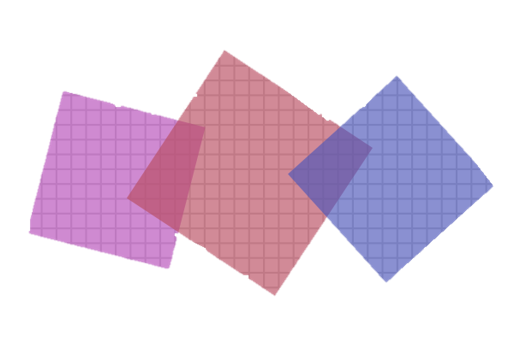
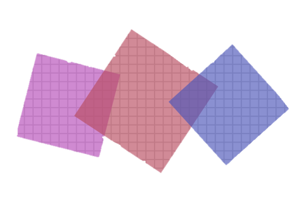
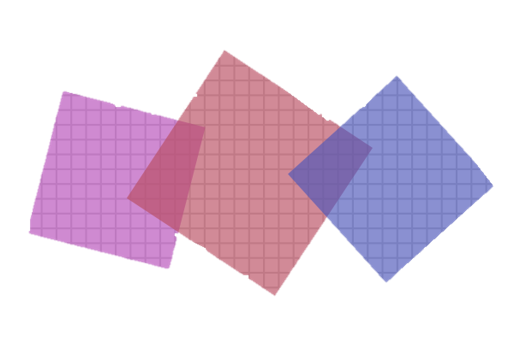
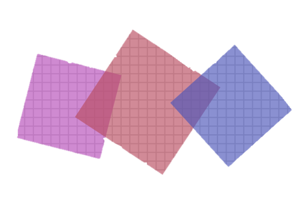

I'm Yulia
a multitasker.
 



After dabbling here and there during my University time, I started learning properly in 2018 and intend to make 2019 a Year of Coding. I love my husband, cats and Scandinavian movies.
I like plants and sketching, so recently I started sketching plants. You can see a link to my sketches below.
I love breakfast, second breakfast, brunch, you name it. Regarding hot drinks my favourite combination is a cup of nice green tea with my breakfast and a cup of espresso with a nishtyak to finish.
I'm always cold. When I'm not cold, it probably means I'm wearing two pairs of socks and lying under my big blanket or using my flanel sheets. I also own a hot water bottle and a heater.
I've been vegetarian for 11 years, and in 2008 I started trying fish. If you want to know about the fish I've tried in Portugal, you can find the link below.
We can also discuss cats
CONTACT ME